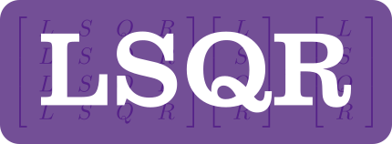

LSQR


Brief Description
A Fortran 2008 edition of LSQR, a conjugate-gradient type method for solving sparse linear equations and sparse least-squares problems.
LSQR can solve linear systems of the form: A * x = b or [A; damp*I]*x = [b; 0]. Where A is a matrix with m rows and n columns, b is an m-vector, and damp is a scalar. The matrix A is intended to be large and sparse, and may be square or rectangular (over-determined or under-determined).
Usage
There are two classes in the library that can be used, lsqr_solver (which is more low-level) and lsqr_solver_ez (which has a simpler interface).
To use the lsqr_solver_ez class, you have to provide the matrix A in sparse form, using three arrays: the row indices, column indices, and the nonzero elements. Here is an example:
program main
use lsqr_kinds
use lsqr_module, only: lsqr_solver_ez
implicit none
! define a 3x3 dense system to solve:
integer,parameter :: m = 3 !! number of rows in `A` matrix
integer,parameter :: n = 3 !! number of columns in `A` matrix
real(wp),dimension(m),parameter :: b = real([1,2,3],wp) !! RHS vector
integer,dimension(m*n),parameter :: icol = [1,1,1,2,2,2,3,3,3] !! col indices of nonzero elements of `A`
integer,dimension(m*n),parameter :: irow = [1,2,3,1,2,3,1,2,3] !! row indices of nonzero elements of `A`
real(wp),dimension(m*n),parameter :: a = real([1,4,7,2,5,88,3,66,9],wp) !! nonzero elements of `A`
type(lsqr_solver_ez) :: solver !! main solver class
real(wp),dimension(n) :: x !! solution to `A*x = b`
integer :: istop !! solver exit code
call solver%initialize(m,n,a,irow,icol) ! use defaults for other optional inputs
call solver%solve(b,zero,x,istop) ! solve the linear system
write(*,*) 'istop = ', istop
write(*,'(1P,A,*(E16.6))') 'x = ', x
end program main
The result from this example is:
istop = 1
x = 1.242424E+00 -6.060606E-02 -4.040404E-02
Compiling
A Fortran Package Manager manifest file is included, so that the library and test cases can be compiled with FPM. For example:
fpm build --profile release
fpm test --profile release
To use lsqr within your fpm project, add the following to your fpm.toml file:
[dependencies]
lsqr = { git="https://github.com/jacobwilliams/lsqr.git" }
Documentation
The latest API documentation can be found here. This was generated from the source code using FORD.
License
The lsqr source code and related files and documentation are distributed under a permissive free software license (BSD-style).
References
- The original Fortran 77 version of this algorithm can be found here: https://web.stanford.edu/group/SOL/software/lsqr/ The updated version has been significantly refactored.
- C.C. Paige and M.A. Saunders, LSQR: An algorithm for sparse linear equations and sparse least squares, ACM Transactions on Mathematical Software 8, 1 (March 1982), pp. 43-71.
- C.C. Paige and M.A. Saunders, Algorithm 583, LSQR: Sparse linear equations and least-squares problems, ACM Transactions on Mathematical Software 8, 2 (June 1982), pp. 195-209.
- C.L. Lawson, R.J. Hanson, D.R. Kincaid and F.T. Krogh, Basic linear algebra subprograms for Fortran usage, ACM Transactions on Mathematical Software 5, 3 (Sept 1979), pp. 308-323 and 324-325.